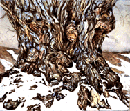

Cottonwood

This is another version of the largest Plains Cottonwood in the USA,
located in Hygiene,
Colorado. The tree was pretty easy to find since the town of Hygiene is miniscule out there on the wide high plains. Since it was early March and the snow was beginning to melt and mix with the rich brown-red dirt, the high-altitude air was luxurious with the smell of cold dampness and wet earth. I remember that all of my sense modalities were bombarded
with intense stimuli, and I think the painting is an attempt to unify and purify all of the sensations of those moments.
© June Julian 1997
Cottonwood
Watercolor on Paper 22"X33"
Plains Cottonwood
Populus deltoides var occidentalis
age: approx. 400 years
circumference 54 inches from base: 432 inches
Date: Sat, 2 Nov 96 14:57:37 UT
From: Janet Ratzloff
To: jj68@NYU.EDU
Subject: your web page
I really like your web page theme and especially the page on the ancient
cottonwood near Hygiene. What a great painting!!!!!
I was searching for cottonwood tree when I hit it.
I walk each morning beneath a grove of 11 cottonwoods near my home. One is
very old. There is a large flat root that protrudes from the earth right in
the middle of the path. It is part of my daily routine to reach down and
place my hand on the root, in the direction of the grain. I am not sure why I
do this, but life has its habits.
Jim Ratzloff - jim@naturalist.org (http://www.naturalist.org)
Good Job. You are appreciated.
 Return to Main Page
Return to Main Page
Comments
Please send e-mail to: June Julian jj68@nyu.edu